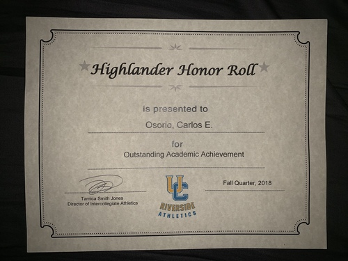
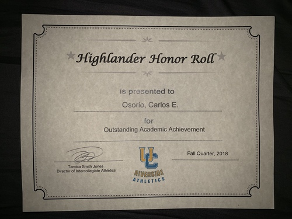
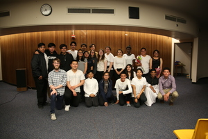
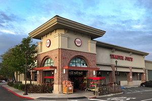
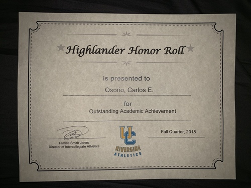
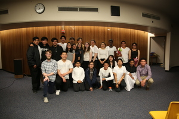
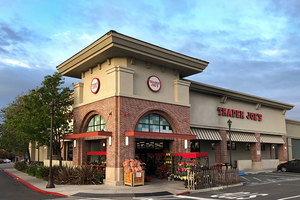

Carlos Osorio
My name is Carlos Osorio. I am 19 years of age and have been playing soccer for the majority of my life. I am currently a student-athlete at the University of California, Riverside. In my free time I really enjoy playing video games, watching movies, hanging out with friends, and engaging in photography. In fact, the reason I got involved in photography was because of film because at the end of the day cinema, in its most simplest sense, deals with what's in the frame and what's out of it. If I had to choose my top 3 favorite movies of all time I think I would go with The Shawshank Redemption, Raging Bull, and Gladiator.
I'm on the Pre-Business path looking to go into either accounting or economics. These concentrations interest me due to the fact that they deal with things that occur on a day to day basis and they rely on calculation. I'm looking forward to possibly earning an internship with a concentration in either of these categories. Being that I am a fan of both cinema and mathematics I have been considering minoring in either one of these subjects. The minor in math will further help with my advancement in accounting whereas cinema will be me simply pursuing something I am very passionate about.
My work experience includes being a cashier for Trader Joe's along with a lot of volunteer work. Specifically, I've volunteered multiple times to assist in events such as the Veterans Day parade or teaching kids the game of soccer after school through trainings. Other volunteer work includes helping people move in to their new apartments at the beginning of the school year to welcome them in to UCR. Both working with kids and the volunteer work has taught me many valuable lessons. I have learned patience with the kids because I constantly need to remember that they're just beginning to learn the game of soccer. As for the volunteer work, I've learned that even the slightest bit of help goes a long way. Someone could be struggling and by simply helping them out with a few things you've saved them an immense amount of time.
Experience
Coach
• Coached kids between the ages of 6-8 years old
• 2-3 times a week during the summer
Cashier/Courtesy Clerk
• Responsible for assisting customers with either check out or simply to find things
• Responsible for restocking shelves on aisles
• Part-time job
Actor
• Joined the club as a senior and mentored the underclassmen
• Took risks and learned many new things in regards to theatrical entertainment
• Created relationships with people I never expected to
• Learned the importance of communcation in regards to the message being sent and how it's sent
Education
UC Riverside
University of California Riverside
Portfolio
.jpg) 



 